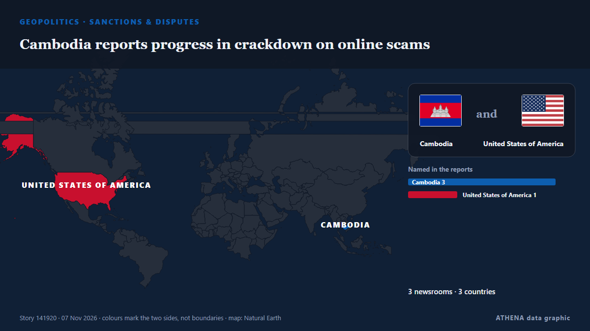

Sanctions & disputes
SponsoredPresented by  Cybernetics and Artificial Intelligence Lab Welcome to the Cybernetics and Artificial Intelligence Laboratory, established at the Department of Business Administration of the National and Kapodistrian University of Athens. The lab is headed by Professor Dimitrios Thomakos. The lab aims to do research that can be published in top venues. Our research uses tools and methods of Artificial Intelligence, and lies in the following areas: - Forecasting - Decision making - Cyber security - Finance We are always looking forward to collaborating with exceptional students!
Cybernetics and Artificial Intelligence Lab Welcome to the Cybernetics and Artificial Intelligence Laboratory, established at the Department of Business Administration of the National and Kapodistrian University of Athens. The lab is headed by Professor Dimitrios Thomakos. The lab aims to do research that can be published in top venues. Our research uses tools and methods of Artificial Intelligence, and lies in the following areas: - Forecasting - Decision making - Cyber security - Finance We are always looking forward to collaborating with exceptional students!
| 25 Oct | 0 |
|---|---|
| 26 Oct | 0 |
| 27 Oct | 0 |
| 28 Oct | 0 |
| 29 Oct | 0 |
| 30 Oct | 0 |
| 31 Oct | 0 |
| 1 Nov | 0 |
| 2 Nov | 0 |
| 3 Nov | 1 |
| 4 Nov | 4 |
| 5 Nov | 5 |
| 6 Nov | 2 |
| 7 Nov | 1 |

Cambodia reports progress in crackdown on online scams
Cambodia has taken action against 972 locations linked to online scams, detained 5,032 suspects and repatriated 23,760 foreign nationals of 38 nationalities as part of its nationwide crackdown… from Khmer Times
US sanctions network supporting Iranian oil shipments
The action blocks designated parties’ US-held assets and restricts US transactions, but its effect on Iranian oil exports is unclear. from Oil & Gas Journal
Further Sanctions on the Cuban Regime’s Foreign Military Support and Illicit Revenue Networks – Fact Sheet
Marco Rubio, Secretary of State Further Sanctions on the Cuban Regime’s Foreign Military Support and Illicit Revenue Networks Press Statement November 5, 2026 Cuba’s ruling elite is hoarding the… from US State Department press releases
Disrupting Iran’s Pursuit of Man-Portable Air-Defense Systems
State Department designates 2 individuals, Nigeria-based firm that it says is tied to Iran’s MANPADS procurement. from Anadolu Agency (English)
US slaps sanctions on Indian, Turkish firms and people for aiding Iran
Washington aims to cut off Iran’s ability to sell oil to fund the war with the US. from The Straits Times
US Sanctions Network Accused Of Running Fake Ship Registries For 11 Countries To Flag Iran’s Shadow Fleet
US sanctions India-based maritime network accused of providing false flags and fraudulent certifications to Iranian shadow fleet vessels. from Marine Insight
Rwanda's army team removed from Africa league after US sanctions, NBA says
The US imposed sanctions on Rwanda's army over its role in the conflict in DR Congo. from BBC News